StudySpace
Interim Report
TU857
BSc in Computer Science Infrastructure
Keith Salhani
C22322811
Supervisor
Fatmaelzahraa Eltaher
School of Computer Science
Technological University, Dublin
Date 10 Nov 2025
Abstract
This interim report presents the design and early-stage development of StudySpace, an AI-powered study hub for undergraduate students. The system ingests unstructured academic material (PDF, DOCX, PPTX and images of handwritten notes), automatically organises it by module and resource type, extracts key administrative information such as assessment weights and lecturer contact details, and exposes the content through retrieval-augmented generation (RAG), quiz generation, and flashcard views. The motivation is the fragmented ecosystem in which students currently manage their learning, where time is lost searching for files and manually analysing module descriptors and past papers instead of engaging in targeted study.
Building on recent advances in document AI [46], OCR and RAG, StudySpace aims to deliver a practical "Study OS" that reduces administrative overhead while supporting evidence-based learning techniques such as retrieval practice and spaced repetition. This report summarises the project background, reviews relevant literature and technologies, outlines the initial system analysis and design, and sets out the testing strategy, prototype plan, and future work for the remainder of the project.
Declaration
I hereby declare that the work described in this dissertation is, except where otherwise stated, entirely my own work and has not been submitted as an exercise for a degree at this or any other university.
Signed:
Keith Salhani
Date 10 Nov 2025
Acknowledgements
I would like to thank my supervisor, Dr. Fatmaelzahraa Eltaher, for her guidance and feedback during the early stages of this project. I am also grateful to my classmates and friends who shared their experiences of managing notes, past papers and deadlines, which helped to shape the requirements for StudySpace.
Contents
1. Introduction 1
1.3 Project Aims and Objectives 1
2.2 Alternative Existing Solutions 2
2.5 Existing Final Year Projects 2
3.4 Initial System Specification 3
7.3.1 Project Plan with GANTT Chart 7
A) Appendix A: Survey Questions A-1
C) Appendix C: Prompts Used with ChatGPT C-1
D) Appendix D: Additional Code Samples D-1
University students increasingly manage their learning across a fragmented ecosystem of systems and formats: lecture notes on Brightspace, labs in email attachments, past papers on departmental sites, screenshots in messaging apps, and ad-hoc notes stored on personal devices. Keeping track of what to study, when assessments are due, and which topics are likely to appear in exams often depends on manual organisation and personal discipline rather than any integrated tool support. For many students, significant time is spent searching for files, re-reading module descriptors, and manually analysing past papers instead of engaging in targeted, study.
At the same time, advances in large language models (LLMs) and Retrieval-Augmented Generation (RAG) have made it feasible to build systems that can search and reason over user-specific corpora of documents with traceable references and improved factual accuracy. RAG architectures combine a retriever (which searches over an external index of documents) with a generator (an LLM), enabling question-answering grounded directly in the user’s own materials rather than relying on general web knowledge. This pattern is well-suited to the university context, where each student accumulates a personal but loosely organised collection of academic content.
This project aims to leverage these developments to build an AI-powered “study hub” for undergraduate students. The system ingests unstructured academic files (PDF, DOCX, PPTX and images of notes), automatically organises them by module and resource type, extracts key administrative information, and supports RAG-powered question answering and quiz generation over the student’s corpus. By unifying document management, retrieval, quiz creation, calendar population, and progress tracking in a single web application, the project seeks to reduce administrative overhead and support evidence-based study habits such as retrieval practice and spaced repetition.
The interim report documents the progress made to date in analysing, designing, and beginning to prototype this system. It outlines the background and motivation for the project, describes the proposed solution at a high level, defines the aims and objectives, clarifies the scope, and provides a roadmap for the remainder of the dissertation.
StudySpace is an AI-powered web application that acts as a central hub for a student’s academic materials. Students upload or connect their existing files – including lecture slides, lab sheets, tutorials, module descriptors and past exam papers – in formats such as PDF, DOCX, PPTX and images of handwritten notes. An ingestion pipeline parses these documents, performs OCR where needed, and assigns each file a module label (e.g. Forensics, Machine Learning, Algorithms) and a resource type (Lecture, Lab, Tutorial, Descriptor, Past Paper).
From these documents the system extracts structured metadata, such as lecturer contact details, assessment breakdowns and key dates, which can be synchronised with a calendar. The content itself is embedded into a vector database to support RAG-based question answering, where students can ask natural-language questions grounded in their own notes. A quiz and flashcard engine generates practice questions, while a past-paper analysis module identifies frequently recurring topics. Together, these components form a practical "Study OS" that supports both organisation and effective study.
Figure 1: StudySpace System Overview. Source: Author Generated
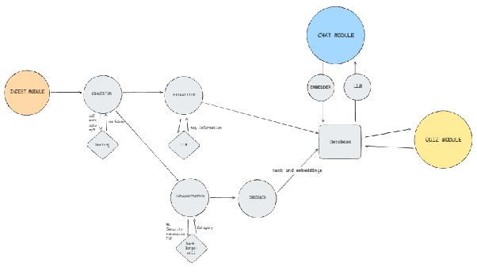
The overall aim of this project is to design and implement a usable "Study OS" that automatically organises a student’s academic materials and provides intelligent support for retrieval-based learning.
1. Ingestion & parsing. Build an ingestion pipeline that parses PDF/DOCX/PPTX and scanned documents (OCR).
2. Auto‑classification. Automatically label each file by module and resource type using zero‑shot text classification.
3. Metadata extraction. Extract assessment weights, deadlines and contact details into a structured store.
4. RAG question answering. Provide traceable answers grounded in the student’s corpus.
5. Quiz/flashcards. Generate quizzes/flashcards aligned with retrieval‑practice principles from selected modules/topics.
6. Past‑paper topic mining. Surface frequently examined themes.
7. Usable web UI. Ship a responsive interface suitable for everyday use by undergraduates.
9. Calendar & transparency (maybe). Sync extracted deadlines to a calendar and expose citations for every answer/quiz item.
10. Evaluation & feedback loop. Run a small formative user study
The scope of this project focuses on a single-user web application that ingests and organises documents for an individual student. StudySpace will support a realistic subset of file types commonly encountered in TU Dublin modules (PDF, DOCX, PPTX and images), perform module and resource-type classification, extract core administrative metadata, and provide RAG-based Q&A, quiz generation and basic past-paper analysis. The system will be evaluated on a sample corpus assembled from anonymised or publicly available teaching materials.
Out of scope are multi-tenant deployments for entire programmes, robust authentication and authorisation for institutional use, and production-grade integrations with Brightspace or other learning management systems. Advanced analytics such as full learning-analytics dashboards and long-term spaced-repetition scheduling are also beyond the scope of this initial project, though the architecture will be designed so that they could be explored as future work.
Chapter 1 introduces the motivation for StudySpace, describes the proposed solution, defines the aims and objectives, clarifies the scope, and outlines the structure of the dissertation.
Chapter 2 reviews related work, including existing study tools, relevant technologies such as RAG and document AI, educational research on retrieval practice, and similar final-year projects.
Chapter 3 presents the system analysis, covering stakeholders, requirements gathering, requirements analysis and an initial system specification.
Chapter 4 describes the system design, including the chosen software development methodology, logical architecture and key design decisions.
Chapter 5 outlines the planned testing and evaluation strategy for the different components of the system and the overall user experience.
Chapter 6 describes the prototype implementation, discussing the development of each logical component and summarising early results.
Chapter 7 reflects on issues and risks encountered so far, and sets out a plan and Gantt chart for completing the project and potential future extensions.
This chapter surveys the academic and technical background that informs the design of StudySpace. It first examines existing commercial and open-source tools that support note organisation, flashcards and learning management. It then considers key enabling technologies such as document parsing, OCR, RAG and zero-shot text classification. Educational research on retrieval practice and spaced repetition is discussed to motivate the quiz and flashcard features. Finally, relevant final-year projects and student-focused learning tools are reviewed to position StudySpace within existing work.
A range of existing tools address parts of the study workflow but rarely provide an end‑to‑end experience. The following sections analyse the most prominent categories of tools available to students today.
Learning Management Systems (LMS) such as Brightspace and Moodle form the digital backbone of most universities. These platforms serve as the official repository for lecture notes, assignments, and announcements. Their primary strength lies in their institutional integration: they are the authoritative source for module descriptors and grade books.
However, from a student’s perspective, they function primarily as static file repositories rather than active study tools. They offer limited personal organisation features; a student cannot easily regroup materials from different modules into a single revision topic, nor can they perform intelligent searches across all their modules simultaneously. The user experience is typically course-centric rather than student-centric, meaning materials are siloed within their respective module pages, making cross-module synthesis difficult.
Students often migrate content from the LMS to personal note-taking applications to organise their learning.
Notion
Notion is a popular all-in-one workspace that combines note-taking, databases, and project management. It allows students to create highly customised dashboards using a block-based editor. While powerful, Notion relies entirely on manual structure: the user must design the hierarchy, tag every page, and manually upload every file. It does not inherently understand that a PDF is a "Past Paper" or a "Lecture Slide," nor can it automatically extract deadlines from a module descriptor.
Figure 2: Notion Interface. Source: Notion
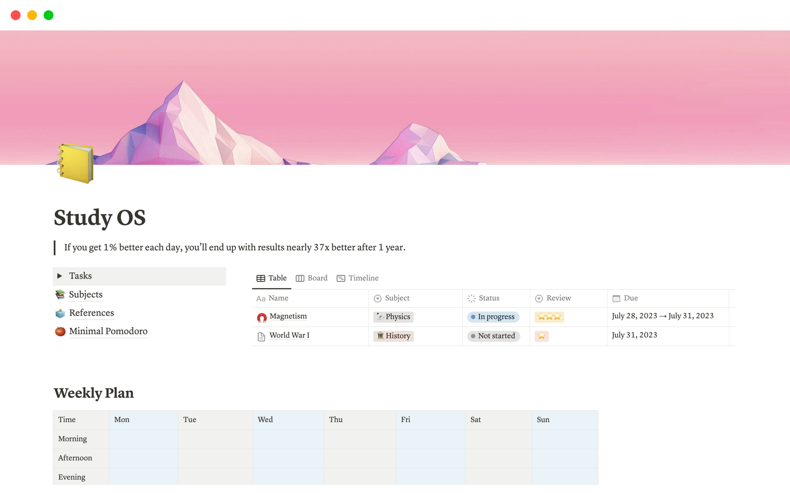
Microsoft OneNote
OneNote mimics a traditional physical binder with notebooks, sections, and pages. It is widely used due to its deep integration with the Microsoft ecosystem and excellent support for digital handwriting (inking). OneNote's free-form canvas is ideal for annotating slides or solving math problems by hand. However, like Notion, it treats documents primarily as attachments or printouts. It lacks semantic understanding of the content, meaning it cannot easily generate a quiz from a semester's worth of notes or answer complex questions based on the text within slides.
Figure 3: OneNote Interface. Source: OneNote
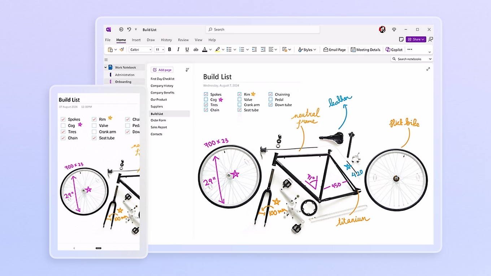
Obsidian
Obsidian is a local-first, Markdown-based knowledge base that emphasises "linking your thinking." It creates a graph of interconnected notes, which is excellent for long-term knowledge management and research. However, Obsidian has a steep learning curve and requires users to be comfortable with Markdown. It is also fundamentally a text editor; while it handles PDF attachments, it does not natively parse or "read" them for the purpose of RAG-based Q&A without complex third-party plugins.
Figure 4: Obsidian Graph View. Source: Obsidian.md
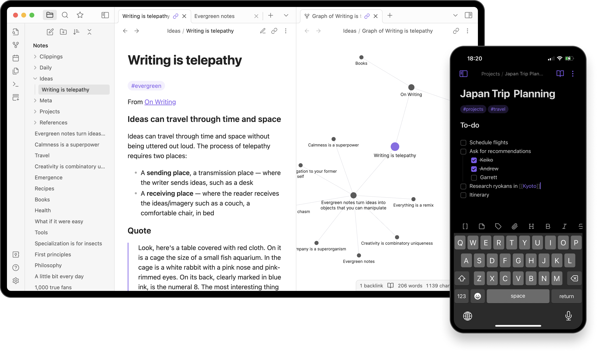
Recently, Google introduced NotebookLM, which represents the closest conceptual competitor to StudySpace. NotebookLM is an AI-first notebook that allows users to upload documents (PDFs, text files) and then uses RAG to answer questions, generate summaries, and even create "Audio Overviews" (podcast-style discussions) of the material [6].
While NotebookLM validates the core technical approach of StudySpace (RAG over a personal corpus), it remains a general-purpose tool. It treats every upload as a generic source. It does not attempt to classify documents into the specific taxonomy of a university degree (e.g., differentiating a "Lab Sheet" from a "Descriptor"), nor does it extract structured metadata like assessment weightings or lecturer emails to populate a calendar. StudySpace distinguishes itself by wrapping the core RAG capability in a workflow specifically designed for the undergraduate experience, including past-paper topic mining and module-based organisation.
Figure 5: NotebookLM Interface. Source: https://notebooklm.google/
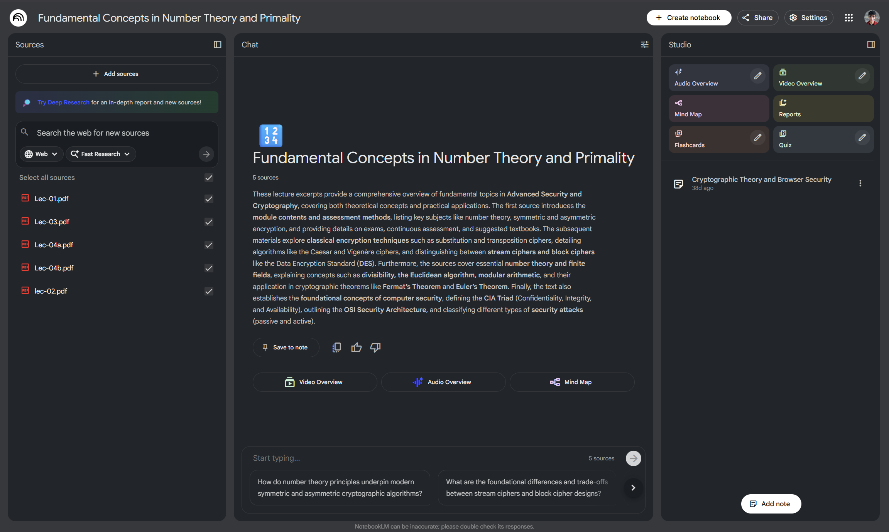
Dedicated platforms like Anki and Quizlet are the gold standard for spaced repetition and retrieval practice. These tools are highly effective for memorisation but suffer from a major friction point: content creation. Students must manually create every flashcard, which is time-consuming and often leads to "premature summarisation," where students spend more time making cards than studying them.
While some newer tools allow generating cards from text, they often lack the context of the full module. StudySpace aims to bridge this gap by generating quizzes and flashcards directly from the source material (e.g., "Generate a quiz on the topics covered in Lecture 1 to 4"), automating the creation phase so students can focus immediately on the retrieval practice [14].
Figure 6: Anki Interface. Source: Anki.com
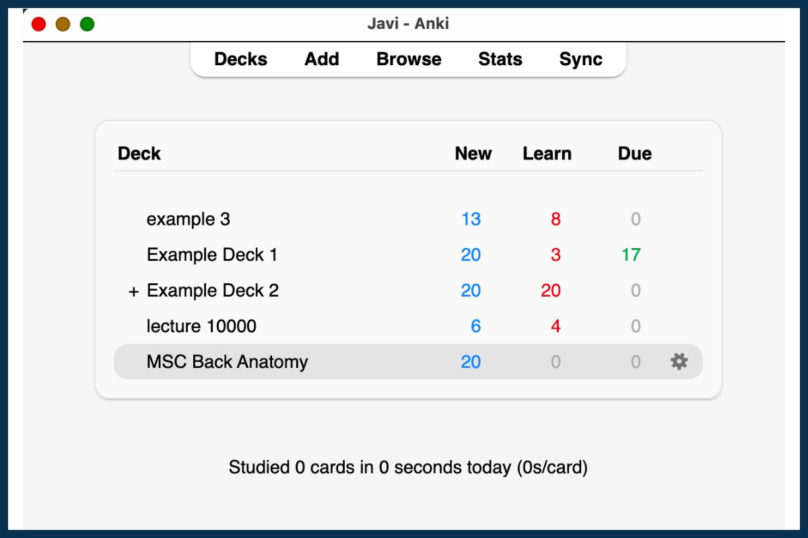
Figure 7: Quizlet Interface. Source: Quizlet.com
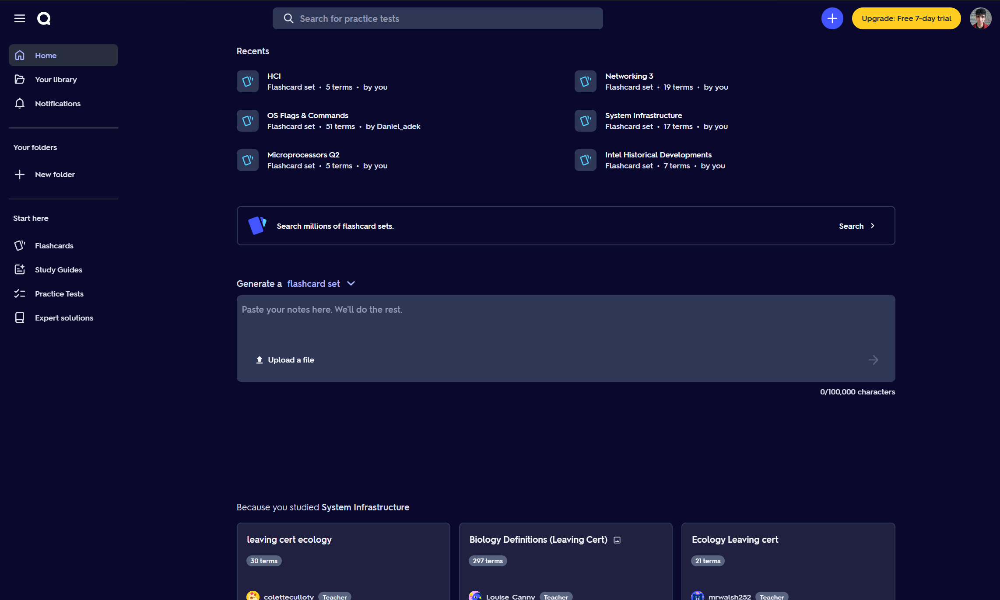
Taken together, these tools show that every stage of the study journey already has a "best-in-class" candidate, yet no single platform threads them into an end-to-end workflow. LMS platforms excel at compliance and distribution but offload personal organisation to the student [29][34]. Personal knowledge bases are flexible but depend on meticulous manual curation and ongoing tagging by the learner [35][36][37]. Emerging AI notebooks such as NotebookLM prove the value of RAG yet ignore academic taxonomies and assessment metadata within degree programmes [6][7]. Flashcard suites operationalise retrieval practice but still rely on handcrafted content, sustaining the "friction of creation" noted in cognitive-science literature [14][38][39]. StudySpace targets precisely the seams between these categories by combining ingestion, organisation, retrieval, and active study loops inside one product intentionally scoped to undergraduate needs [29]-[31].
| Dimension | LMS (Brightspace, Moodle) | Knowledge bases (Notion, OneNote, Obsidian) | AI notebooks (NotebookLM) | Flashcard suites (Anki, Quizlet) | StudySpace (proposed) |
|---|---|---|---|---|---|
| Content acquisition | Lecturers push canonical files, but ingestion is siloed per module. | Users must manually upload or copy assets; no automatic sync. | Users upload PDFs/text; limited support for multi-format pipelines. | Users type cards or import decks; source files handled elsewhere. | Unified ingestion of PDF/DOCX/PPTX/images, with OCR and chunking per module. |
| Classification & metadata | Module-centric folders; no student-defined cross-cutting tags. | Arbitrary hierarchies and tags, but entirely manual. | Treats each upload as a generic document; no notion of "Lab" vs "Past Paper". | Only stores question/answer pairs; assessment metadata absent. | Zero-shot classification plus metadata extraction to capture assessments, contacts, deadlines. |
| Retrieval & Q&A | Keyword search limited to single module/course. | Text search within a notebook; no semantic retrieval over uploads. | RAG answers over provided sources but lacks source-specific filters or citations per assessment. | No retrieval beyond searching existing cards. | Dense retrieval with citations and module filters, oriented around student corpora. |
| Active study support | Basic quizzes created by lecturers; little personalisation. | Requires manual creation of quizzes or embeds third-party widgets. | Generates summaries and audio briefings but not structured quizzes/flashcards. | Powerful spaced repetition once cards exist. | Auto-generated quizzes/flashcards tied to ingested material, enabling retrieval practice without authoring overhead. |
| Student-centric workflow | Designed for institution-wide administration rather than individual study journeys. | Highly customisable but time-consuming to maintain; no automated insights. | General-purpose; lacks hooks for calendars, assessment timelines, or past-paper mining. | Optimised for memorisation, not document management or scheduling. | Encodes undergraduate workflow end-to-end: ingestion → organisation → Q&A → retrieval practice, with provenance and calendar-ready metadata. |
This comparison, grounded in vendor documentation and student experience studies, highlights the opportunity for a vertically integrated toolchain [6][7][14][29]-[39]. Instead of asking students to orchestrate five separate products—and manually stitch outputs between them—StudySpace aims to collocate the strengths of each category (trusted content distribution, flexible organisation, AI-grounded reasoning, and spaced repetition) while removing their biggest friction points (siloed storage, manual tagging, context-blind AI, and card authoring).
To convert heterogeneous academic files into structured representations that preserve headings, reading order, and tables, the project evaluates Docling, an open-source toolkit developed by IBM Research [2]. Unlike pure Vision-Language Model (VLM) approaches which can be computationally expensive and prone to hallucinations, Docling employs a modular, specialized pipeline. It combines programmatic PDF parsing with optical character recognition (OCR) to ensure faithful text extraction while using dedicated AI models to recover structure.
At the core of this architecture are DocLayNet and TableFormer. DocLayNet is a layout analysis model trained on human-annotated datasets to classify page elements (headers, footers, figures, equations) [4], while TableFormer recovers the structure of complex tables, ensuring that row/column relationships are preserved. This hybrid approach allows Docling to build a unified internal representation (the DoclingDocument) that can be exported as semantic Markdown or JSON.
This capability is critical for StudySpace, as academic materials often contain multi-column layouts and complex formatting that traditional extractors miss. Docling's ability to run locally on commodity hardware ensures privacy and efficiency, and its native integration with frameworks like LangChain and LlamaIndex simplifies the connection to the RAG pipeline.
Figure 8: Docling Architecture. Source: https://github.com/docling-project/docling
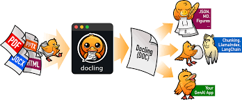
Figure 9: Docling Pipeline. Source: https://github.com/docling-project/docling
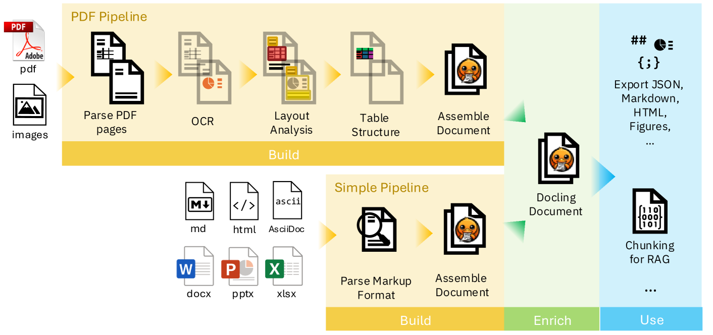
Alternative Parsing Technologies.
Several other tools were considered for the ingestion layer, each presenting distinct trade-offs between speed, accuracy, and resource consumption.
Independent 2025 Python text-extraction benchmarks show how dramatic those trade-offs can be: Docling reached a 98.5 % document success rate but processed medium documents at only 0.15 files/sec on CPU, while MarkItDown achieved 20‑50+ files/sec yet only 47.3 % overall success, and Unstructured delivered 97.8 % success but at ~1.2 files/sec with ~1.4 GB RAM consumption [32]. These figures reinforce that throughput and fidelity rarely move in lockstep.
MarkItDown (Microsoft) remains attractive for high-volume, Office-first uploads: it streams Markdown extremely quickly and natively handles DOCX/PPTX/HTML [18][32]. The downside is that PDF fidelity relies on simple heuristics; multi-column lecture notes or scanned handouts quickly require bolting on Azure Document Intelligence to recover structure.
Unstructured is still the “Swiss army knife” of open-source RAG pipelines. Its partitioning strategies can emit semantic chunks (figures, tables, narrative) out-of-the-box, which is valuable for LLM grounding. However, the benchmark data above confirms the experiential cost: throughput is an order of magnitude slower than MarkItDown and memory pressure is substantially higher, complicating on-device ingestion for students [32].
Marker (datalab-to) is a specialized deep-learning pipeline for converting PDF to Markdown. Its README includes an H100 benchmark where Marker averaged 2.84 s/page with a 95.7 heuristic score and 4.24/5 LLM quality score—comfortably ahead of Docling, LlamaParse and Mathpix on the same dataset [19]. The trade-off is operational: it assumes GPU acceleration, bundles multiple PyTorch models (~6 GB VRAM), and requires CUDA-enabled build tooling.
Pandoc remains the gold standard for converting between structured text formats (e.g. Markdown to DOCX) [20], but it lacks native OCR or advanced layout analysis capabilities for PDF. When processing PDFs, it typically relies on basic text extraction tools (like pdftotext) which strip out structural information such as table headers and column boundaries, rendering it unsuitable as a primary ingestion tool for RAG over complex study materials.
Managed cloud parsers provide another axis. Azure’s Document Intelligence model delivered 93 % field-level accuracy, 87 % line-item recall, and ~4.3 s/page in recent comparative benchmarks, while GPT‑4o paired with an OCR pre-pass topped field accuracy at 98 % but needed 16‑33 s/page and still trailed Azure on table reconstruction [33]. These services excel on messy scans yet introduce recurring API costs, privacy reviews, and latency that run counter to StudySpace’s offline-first requirement set.
| Technology | Modality / Typical Use | Benchmark highlights | Operational considerations |
|---|---|---|---|
| Docling (Selected) | Hybrid PDF parsing + OCR (local) | 98.5 % document success; 0.8→0.03 files/sec from tiny→huge docs; 0.79 s/page CPU / 0.11 s/page GPU [2][32]. | Runs offline and preserves layout faithfully but needs >4 GB RAM and is slower than heuristic extractors. |
| MarkItDown | Office → Markdown streaming | 20‑50+ files/sec throughput but only 47.3 % overall success on PDFs [32]. | Near-zero dependencies for DOCX/PPTX, yet complex PDFs require an additional structural parser (e.g., Azure DI). |
| Unstructured | Multi-format partitioner for RAG | 97.8 % success, 1.21 files/sec on medium docs, ~1.4 GB RAM [32]. | Excellent element-level outputs across 60+ formats, but throughput and memory demands complicate student-side ingestion. |
| Marker | GPU deep-learning PDF → Markdown | 2.84 s/page on H100 with 95.7 heuristic score and 4.24/5 LLM score across benchmark PDFs [19]. | Requires CUDA toolchain, ~6 GB VRAM and batching to stay cost-effective. |
| Azure Document Intelligence | Managed IDP (cloud API) | 93 % field accuracy, 87 % line-item recall, 4.3 s/page latency [33]. | Strong on messy scans but introduces network latency, per-page costs and data-governance reviews. |
| GPT‑4o + OCR layer | LLM reasoning + third-party OCR | 98 % field accuracy yet only 57 % table recall; 16‑33 s/page processing [33]. | Top accuracy for bespoke questions, though slow and expensive; requires careful prompt auditing. |
| Pandoc | Structured text conversions | Deterministic transforms between LaTeX/MD/DOCX; no OCR or layout benchmarks [20]. | Ideal for format shifting once text is clean, but unusable as a primary PDF/scan parser. |
Docling was ultimately prioritized for evaluation because it strikes a balance between the structural understanding of Marker and the speed of MarkItDown. While slower than MarkItDown's raw text extraction, Docling pairs ~98 % structural fidelity with commodity-hardware deployment (≈28 ms/page inference on GPU, 0.79 s/page on CPU) so complex academic PDFs are parsed correctly without the heavy GPU requirements of Marker or the latency of Unstructured [2][32].
We evaluate three distinct paradigms for organizing academic content: zero-shot classification (via NLI), few-shot learning (SetFit), and LLM-based reasoning.
facebook/bart-large-mnli treat classification as a Natural Language Inference (NLI) problem. By posing a hypothesis (e.g., "This text is about Computer Science"), the model outputs an entailment score. This approach requires no training data but can be computationally expensive for large batches. Benchmarks show it achieves ~45% improvement over random baselines on unseen labels [21].StudySpace adopts a hybrid approach: initial organization uses zero-shot NLI (DeBERTa-v3) for broad categories, while user corrections feed into a lightweight SetFit model to personalize the taxonomy without retraining heavy models.
Retrieval‑Augmented Generation (RAG) underpins traceable Q&A: a dense retriever searches a vector index of the student’s files and a generator composes answers grounded in retrieved passages. We follow established RAG recipes and recent surveys to guide design choices (retriever type, chunking, citation strategy). Embeddings are selected based on MTEB benchmarks, stored in a vector database such as Qdrant or Chroma. Qdrant exposes HNSW indexing and rich metadata filtering; Chroma emphasizes developer ergonomics and full‑text + vector retrieval for LLM apps. [1] [11] [12] [13]
Beyond this baseline architecture, recent RAG research proposes a number of retrieval strategies that are particularly relevant to StudySpace’s setting of heterogeneous student notes and past papers. Five techniques stand out in the literature: (1) hybrid sparse + dense retrieval, (2) semantic and hierarchical chunking, (3) two‑stage retrieval with reranking, (4) query rewriting and decomposition, and (5) metadata‑aware retrieval. Together, these methods aim to increase recall of genuinely relevant material while reducing noise in the context window, thereby improving answer quality and citation reliability.
Hybrid sparse + dense retrieval.
Traditional keyword‑based rankers such as BM25 are still highly effective at capturing exact signals—module codes, function names, or distinctive technical terms—while dense embeddings excel at semantic similarity. Hybrid retrieval combines these two families by either (a) running BM25 and dense search in parallel and fusing their scores, or (b) using sparse signals to filter a candidate set that is then re‑ranked by embeddings. Empirical reports from applied RAG systems show that hybrid retrieval consistently outperforms either approach alone on mixed corpora where some queries are “lexical” and others conceptual [47][48]. In the context of StudySpace, a hybrid retriever would allow a query like “COMP302 Lab 4 hash tables” to benefit from exact string matching on the lab title while still retrieving conceptually related slides that mention “hash-based maps” or “dictionary ADTs” without the exact phrase.
Semantic and hierarchical chunking.
Most prototype RAG systems—including the initial StudySpace implementation—use fixed‑length sliding windows (e.g. 1 000 characters with 200 overlap) when slicing documents. However, recent evaluations suggest that semantic chunking, which respects document structure (headings, paragraphs, slide boundaries), yields more coherent contexts and reduces truncation of key definitions [49]. Long‑document RAG pipelines therefore advocate hierarchical retrieval: first retrieving the most relevant document or lecture, then its relevant section, and finally the fine‑grained chunk(s) within that section. For StudySpace, this would map naturally onto the existing module/lecture hierarchy: a query about “backpropagation in Week 5” would first filter to the appropriate module, then identify the Week 5 lecture, then focus on the “Backpropagation” subsection, rather than scattering short chunks from unrelated weeks into the prompt.
Figure 10: Semantic Chunking. Source: https://www.nb-data.com/p/9-chunking-strategis-to-improve-rag
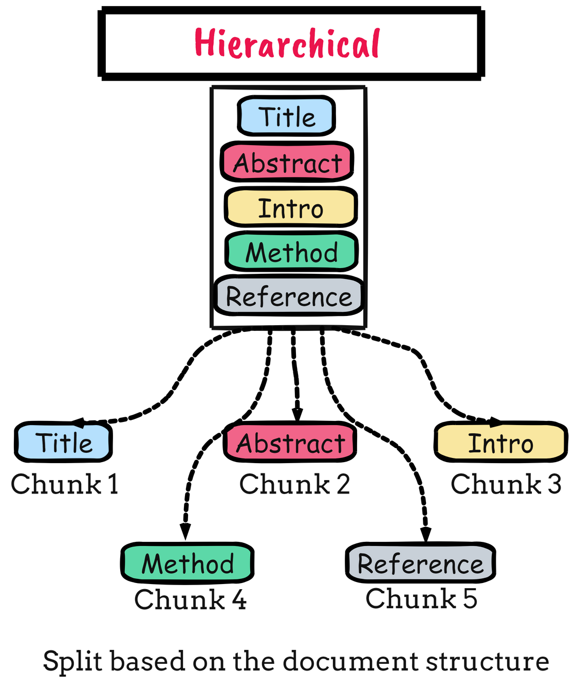
Two‑stage retrieval with reranking.
Another recurring pattern is two‑stage retrieval, where a fast, approximate retriever produces a broad candidate set that is then refined by a more expensive but accurate reranker. In practice, a bi‑encoder or hybrid retriever might return the top‑k (e.g. 30) chunks, which are passed to a cross‑encoder or LLM‑based reranker that scores each query–chunk pair jointly and selects the top‑m (e.g. 5) for the final prompt [50]. Pinecone’s applied studies and other industrial case reports show that such reranking can substantially improve answer grounding in knowledge‑intensive domains without incurring prohibitive latency when k and m are modest [50]. For StudySpace, a reranker could be particularly valuable when similar topics are covered repeatedly across weeks—ensuring that the retrieved chunk actually explains, for example, TCP vs UDP in the networking lecture, rather than a passing mention in an unrelated lab sheet.
Figure 11: Two-Stage Retrieval. Source: https://www.chat-data.com/blog/two-stage-retrieval-and-reranker
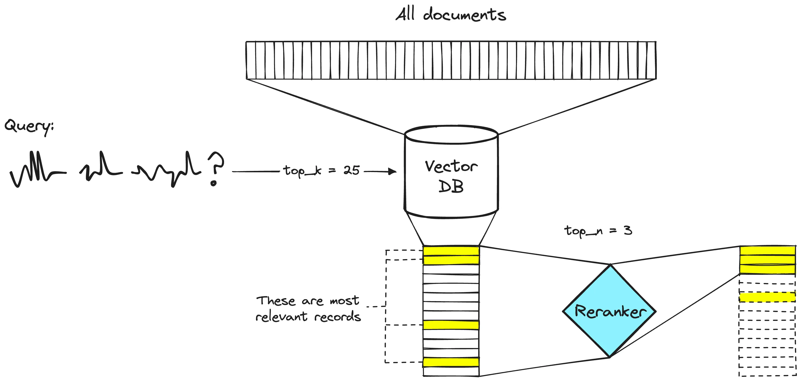
Query rewriting and decomposition.
Students frequently ask under‑specified or multi‑part questions (e.g. “can you explain all the probability from ML?”). RAG best‑practice guides therefore recommend a query rewriting step in which an LLM normalises abbreviations, adds synonyms, or decomposes complex requests into a set of focused sub‑queries before retrieval [48]. Microsoft’s recent technical guidance on RAG, for instance, demonstrates how automatic expansion of acronyms and expansion into multiple intents (e.g. “define concept X”, “give example of X”) increases both recall and relevance in downstream retrieval [48]. In StudySpace, a query‑rewriting layer could translate “revise TCP/UDP” into a richer set of candidate queries that mention “transport layer protocols”, “reliability vs latency trade‑offs”, or “connection‑oriented vs connectionless”, which in turn improves the chances of retrieving the most pedagogically useful slides and past‑paper questions.
Figure 12: Query Decomposition. Source: https://blog.langchain.com/query-transformations/
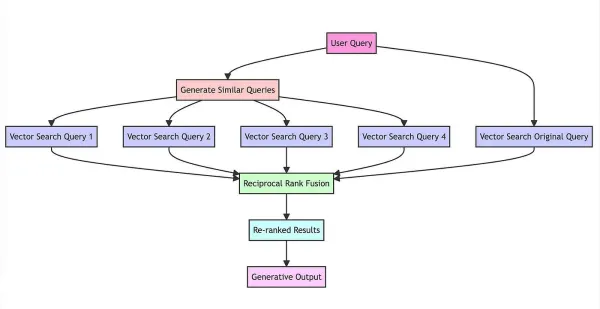
Metadata‑aware retrieval and filtering.
Finally, production RAG systems increasingly exploit structured metadata—document type, source system, timestamps, authorship—to constrain and score retrieval [47][51]. Rather than searching over a monolithic index, they filter or boost candidates according to context (e.g. “prefer up‑to‑date policy documents over archived ones”). This pattern aligns strongly with StudySpace’s design, which already attaches module, resource type (Lecture, Lab, Descriptor, Past Paper), and potentially week or topic labels to each chunk. By pushing these fields into the vector store metadata and retrieval layer, queries can be scoped (“only search COMP202 past papers”), different retrievers can be tuned per resource type (administrative descriptors vs conceptual slides), and explanations can include richer provenance (e.g. “this answer is based on Week 3 lab sheet and the module descriptor”). Case studies of metadata‑aware RAG in industry report both improved user trust and lower hallucination rates, as users can see and control where the model is allowed to look [51].
Figure 13: Metadata Filtering. Source: https://medium.com/@vanshkharidia7/rag-retrieval-beyond-semantic-search-day-5-metadata-filtering-4cf22eb6d016
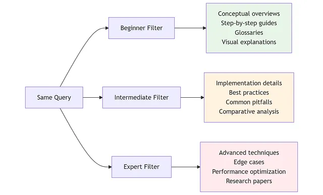
To summarize frequently examined themes, BERTopic clusters document embeddings and constructs interpretable topic labels via class‑based TF‑IDF, providing a practical route to surfacing recurring patterns without training large models from scratch. [8]
To deliver the "Study OS" experience, modern web frameworks were evaluated against traditional approaches.
<ChatBubble /> component). The Virtual DOM ensures high performance for real-time updates, and its widespread industry adoption ensures a rich ecosystem of libraries [40].For the backend, FastAPI (Python) was selected for its native support of asynchronous operations (async/await), which is critical for handling long-running LLM inference tasks without blocking the server.
The core reasoning engine requires a balance of intelligence, cost, and context capacity.
For vector representation, the SentenceTransformers library is utilised in the prototype to provide efficient, dense vector retrieval. However, research indicates that larger, more robust models such as RoBERTa (Facebook) or DeBERTa offer superior performance for complex semantic understanding. Future iterations of the system aim to leverage these "Berta-family" models to improve classification and retrieval accuracy beyond the capabilities of the lightweight prototype models.
Efficient retrieval of relevant document chunks requires a specialized vector database.
To ground the design of StudySpace in pedagogical best practices, we reviewed literature on cognitive science and the emerging role of GenAI in education.
Retrieval Practice & Spaced Repetition in STEM. Educational psychology has long established that retrieval practice—the act of actively recalling information—enhances long-term retention more effectively than passive re-reading [14]. Recent meta-analyses in STEM education confirm that this "Testing Effect" is particularly potent for complex, conceptual subjects like Computer Science. A 2023 study found that students who engaged in automated, low-stakes quizzing scored 12% higher on final exams than those who relied on summarization [24]. Furthermore, spaced repetition algorithms (like SuperMemo-2) have been shown to optimize retention by scheduling reviews just as forgetting begins. However, a key barrier identified in recent literature is the "friction of creation": students often abandon spaced repetition tools because manually creating high-quality flashcards is time-consuming [25]. StudySpace aims to remove this barrier by automating card generation from course materials.
Cognitive Load & Student Organization. Cognitive Load Theory (CLT) suggests that learning is hampered when "extraneous load" (unnecessary mental effort) competes with "germane load" (effort dedicated to learning) [26]. In the context of university study, navigating a fragmented ecosystem of PDF files, LMS notifications, and disparate deadlines constitutes significant extraneous load. Research on student dashboards indicates that unifying these resources into a single "knowledge OS" can reduce anxiety and improve self-regulation [17]. By automating the organisation of files and extraction of deadlines, StudySpace directly targets this reduction of extraneous load.
Generative AI in Education: Efficacy & Risks. The integration of LLMs into education offers personalized support but carries risks. A 2024 systematic review of "AI Tutors" highlights their ability to provide 24/7, Socratic-style guidance, which can democratize access to high-quality tutoring [27]. However, the "hallucination" problem—where AI confidently states falsehoods—remains a critical risk, particularly in STEM where precision is paramount. To mitigate this, recent frameworks advocate for "Grounded GenAI" (like RAG), where every claim is explicitly linked to a verifiable source document. This transparency allows students to trust-but-verify, a pattern that StudySpace adopts by citing source chunks for every answer [28].
Several previous final-year projects at TU Dublin have explored technology to support teaching and learning. For example, an e-learning web application for second-level classrooms combined live polls, Q&A, content sharing and quizzes to improve engagement and e-readiness. That system emphasised real-time interaction, moderation and robust user management.
StudySpace differs in its focus on individual higher-education students and on back-end intelligence rather than classroom interactivity. Instead of building a communication platform, the project concentrates on document ingestion, automated organisation and RAG-based support.
In summary, the literature suggests that while students have access to numerous digital tools, there remains a gap for systems that unify document management with intelligent retrieval and evidence-based study support. Advances in document AI, embeddings and RAG enable such systems to be built on top of existing LLM infrastructure, while research on retrieval practice motivates the inclusion of quizzes and flashcards. These insights inform the requirements, analysis and design decisions described in the following chapters.
StudySpace is designed as a unified "Study Operating System" that aggregates a student's fragmented academic content into a single, intelligent knowledge base. The system functions through a three-stage pipeline: Ingestion, Organisation, and Retrieval.
Ingestion & Organisation: The user uploads unstructured files (PDF notes, PowerPoint slides, Word documents, and images of whiteboards) via a web interface. The system automatically parses these files, using OCR where necessary, and employs zero-shot classification to tag them by Module (e.g., "Artificial Intelligence") and Resource Type (e.g., "Lecture Slides", "Past Paper"). This eliminates the need for manual folder management.
Intelligent Retrieval (RAG): Once indexed, the content becomes queryable through a conversational interface. Unlike keyword search, the system understands semantic intent. A student can ask complex questions (e.g., "Compare the sorting algorithms discussed in Week 3 and Week 5"), and the system retrieves relevant document chunks to generate a cited answer.
Active Study Support: Beyond passive retrieval, the system proactively supports learning. The Quiz Engine allows students to generate self-assessment questions based on specific lectures, while the Metadata Extractor scans module descriptors to identify and surface key dates and assessment weightings.
The interaction model is designed to be low-friction: the complexity of vector embeddings and LLM inference is hidden behind a simple, responsive web interface that functions on both desktop and mobile devices.
The primary stakeholders for StudySpace are undergraduate students managing multiple modules each semester. Secondary stakeholders include lecturers and tutors, who may be interested in how their materials are consumed but are not direct users of the prototype. Initial requirements were gathered through a combination of literature review ("Secondary Research") and planned informal interviews with 6–10 students.
A review of recent surveys (2023-2024) on student digital habits reveals consistent pain points that inform our requirements:
To validate the secondary research findings, a structured survey was distributed to 42 undergraduate students. The results provide quantitative evidence for the design decisions behind StudySpace.
Demographics The respondents represented a balanced cross-section of the student body, with a slight majority in years 2 and 3 (combined ~55%). The disciplinary background was diverse, with significant representation from Engineering (23.8%), Business (21.4%), and Computer Science (21.4%), ensuring that the requirements are not biased solely towards technical users.
Figure 14: Year of Study. Source: Google Forms
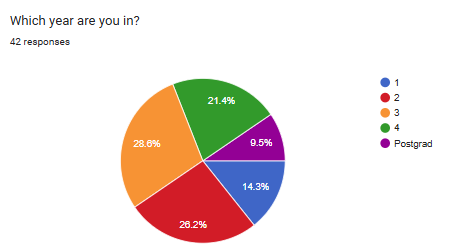
Figure 15: Primary Discipline. Source: Google Forms
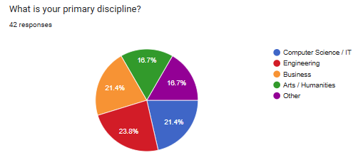
Document Management The survey confirmed the "fragmentation" hypothesis: while 73.8% of students rely on cloud storage (Google Drive/OneDrive), a significant 40% still keep files in local folders, and 57% use knowledge tools like Notion. Crucially, over 64% of students spend more than an hour every week just organising files, with 7% spending more than 3 hours. This administrative overhead validates the need for StudySpace's automated "Unified Ingestion" feature. Opinion on retrievability was mixed: 55% of students were neutral or disagreed that it is easy to find specific information from past weeks, highlighting a clear gap for better search tools.
Figure 16: Storage Location. Source: Google Forms
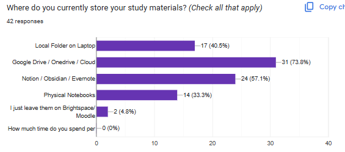
Figure 17: Time Spent Organising. Source: Google Forms
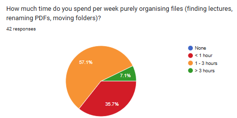
Figure 18: Ease of Retrieval. Source: Google Forms
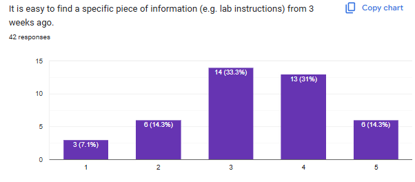
Study Habits Flashcard usage is sporadic. While roughly 70% of students use them at least sometimes, 31% never do. The primary barrier is the "friction of creation": 100% of those who stopped or never started cited that "It takes too long to make them." This finding strongly supports the decision to automate flashcard generation from lecture notes, removing the manual effort that discourages adoption.
Figure 19: Flashcard Usage. Source: Google Forms
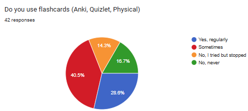
Figure 20: Barriers to Flashcard Use. Source: Google Forms
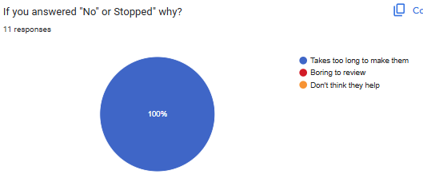
AI in Study Generative AI adoption is universal among respondents (100%), with the primary use cases being "Explaining complex concepts" (73.8%) and "Summarising readings" (57.1%). However, trust remains a major issue. The top frustration, cited by 57.1% of students, is the "Lack of context" — generic models do not know the specific content of their module notes. 28.6% also cited hallucinations as a key concern. This directly motivates the RAG architecture of StudySpace, which grounds answers in the user's specific document corpus.
Figure 21: Current AI Usage. Source: Google Forms
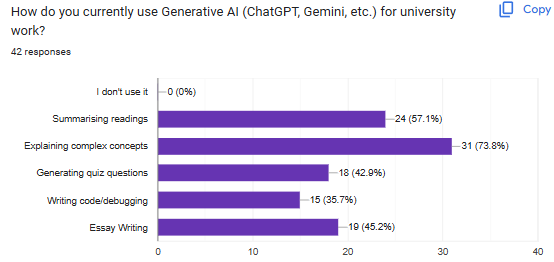
Figure 22: AI Frustrations. Source: Google Forms
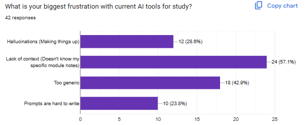
Feature Ranking When asked to rank potential features, "Chat with my specific notes (RAG)" was the overwhelming favourite, with 90.5% of students rating it 5/5 (Most Wanted). "Search everything in one place" was also highly rated (92.9% Top-2 box score). "Calendar sync" showed strong demand (76% Top-2 box), while "Auto-generated Flashcards" and "Quizzes" were more polarizing, reflecting the varied study styles of the cohort.
Figure 23: Feature Demand - Unified Search. Source: Google Forms
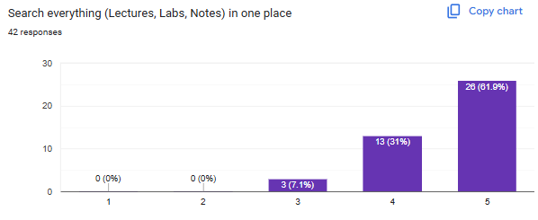
Figure 24: Feature Demand - Chat/RAG. Source: Google Forms
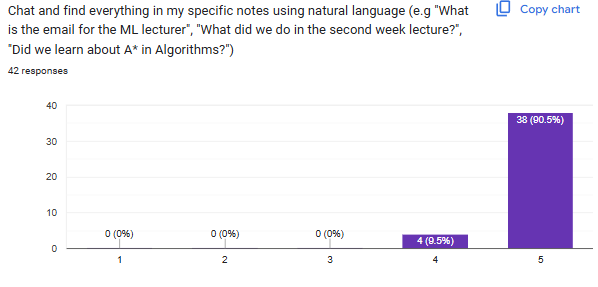
Figure 25: Feature Demand - Quizzes. Source: Google Forms
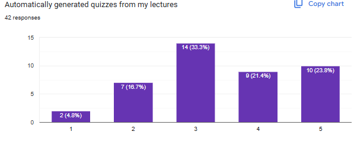
Figure 26: Feature Demand - Flashcards. Source: Google Forms
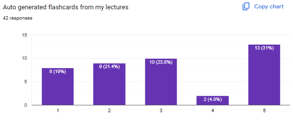
Figure 27: Feature Demand - Calendar Sync. Source: Google Forms
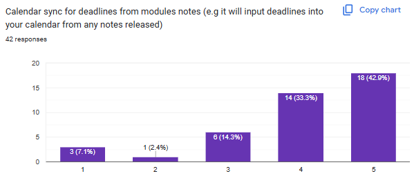
Figure 28: Recall Feature Preference. Source: Google Forms
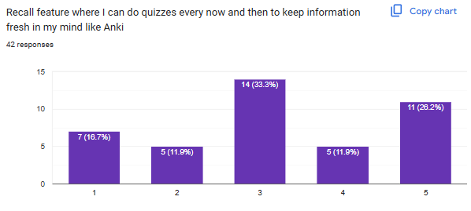
Informal interviews will follow up on these responses to capture qualitative nuance.
Based on the secondary research and validated by the primary survey data, the requirements are analysed below. The "Shoebox" principle and "Second Brain" concepts are directly supported by the finding that over 64% of students spend significant time organizing files and 90.5% explicitly requested RAG capabilities.
The functional requirements are derived from the student needs analysis and prioritised based on the primary research findings.
FR1. Unified Ingestion ("The Shoebox Principle")
FR2. Intelligent Retrieval ("The Second Brain")
FR3. Active Study Support ("The Tutor")
The primary interactions with StudySpace can be modelled through two key use case diagrams: Document Ingestion and Study Session. These diagrams illustrate how the Student actor interacts with the system to achieve the functional requirements outlined above.
Figure 29: Document Ingestion Use Case. Source: Mermaid Diagram
This diagram covers the "Shoebox Principle" (FR1), detailing how documents enter the system.
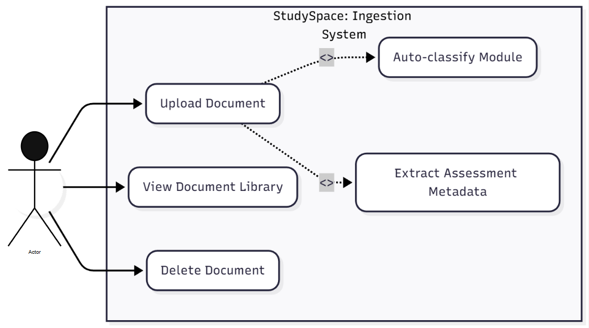
Figure 30: Study Session Use Case. Source: Mermaid Diagram
This diagram covers "Intelligent Retrieval" (FR2) and "Active Study Support" (FR3).
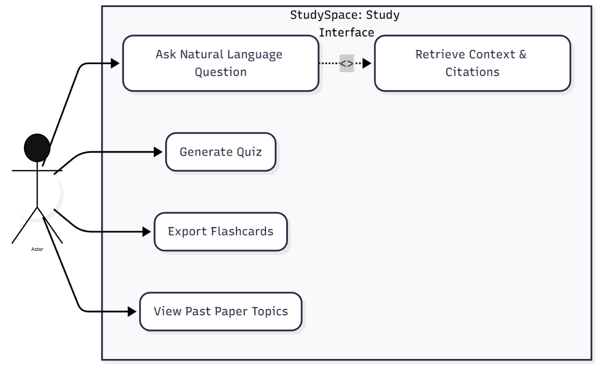
Detailed descriptions for the primary use cases are provided below to clarify the system behavior, exception handling, and success criteria.
| Description of | Goal in Context |
|---|---|
| Goal | Student uploads academic documents to create a searchable knowledge base. |
| Preconditions | • User is logged in • User has PDF, DOCX, PPTX or Image files ready |
| Post Conditions | • Files are stored and indexed • Content is searchable via RAG • Module and resource type are assigned |
| Description | A student uploads a set of lecture notes. The system automatically extracts text, generates embeddings, and tags the file with the correct module code (e.g., "COMP101") so it can be retrieved later. |
Main Flow
| Step | Action | Alternate |
|---|---|---|
| n.1 | User navigates to "Upload" page | |
| n.2 | User drags and drops files | 2.1 User drops unsupported file type |
| n.3 | System validates file format and size | |
| n.4 | User clicks "Process" | |
| n.5 | System converts file to Markdown (OCR if needed) | 5.1 OCR fails on low-quality image |
| n.6 | System generates embeddings for text chunks | |
| n.7 | System classifies document (Module/Type) | 7.1 Confidence low: marks for review |
| n.8 | System extracts metadata (Deadlines, Emails) | |
| n.9 | Upload appears in "Library" view |
Exceptions or Error Flow
| Step | Branching Action | Alternate |
|---|---|---|
| 2.1.1 | User drops .exe or .zip file | System displays: "Unsupported file type. Please upload PDF, DOCX, PPTX, or Image." |
| 5.1.1 | Image is too blurry for OCR | System flags file: "Text extraction failed. Please upload a clearer version." |
| 7.1.1 | Classifier uncertain of Module | System prompts user: "Is this for 'Algorithms' or 'Databases'?" |
Non-Functional Requirements for Use Case 1
| Related Information | Use Case 1: Document Ingestion |
|---|---|
| Priority | High - Core System Functionality |
| Performance | • Classification within 2 seconds • Full indexing of 20-page PDF within 10 seconds |
| Reliability | • 99% success rate for standard text PDFs |
| Privacy | • Files stored in isolated user namespace (Single Tenant) |
| Description of | Goal in Context |
|---|---|
| Goal | Student asks a question to retrieve an answer grounded in their notes. |
| Preconditions | • User has uploaded at least one document • Documents have been successfully indexed |
| Post Conditions | • User receives a cited answer • Interaction is logged in chat history |
| Description | A student asks "What is the difference between TCP and UDP?". The system retrieves relevant chunks from "Networks_Lecture_4.pdf", generates an answer using an LLM, and displays the sources. |
Main Flow
| Step | Action | Alternate |
|---|---|---|
| n.1 | User navigates to "Chat" interface | |
| n.2 | User types a natural language question | |
| n.3 | System encodes query into vector | |
| n.4 | System retrieves top-k relevant chunks | 4.1 No relevant chunks found |
| n.5 | System constructs prompt with context | |
| n.6 | System generates answer via LLM | 6.1 LLM API timeout/error |
| n.7 | System displays answer with citations | |
| n.8 | User clicks citation to view source PDF |
Exceptions or Error Flow
| Step | Branching Action | Alternate |
|---|---|---|
| 4.1.1 | Cosine similarity below threshold | System responds: "I couldn't find information about that in your uploaded documents." |
| 6.1.1 | External LLM API down | System displays: "Service temporarily unavailable. Please try again." |
Non-Functional Requirements for Use Case 2
| Related Information | Use Case 2: Study Session |
|---|---|
| Priority | High - Core Value Proposition |
| Performance | • Retrieval + Generation under 5 seconds |
| Accuracy | • Citations must link to correct source 85% of time |
| Ethical | • System must not hallucinate answers if source text is absent |
To synthesise the requirements into a cohesive structural view, an initial Domain Model was developed. This model (Figure 31) identifies the core entities and relationships that StudySpace must manage, bridging the gap between the user's mental model and the technical architecture.
Figure 31: Initial Domain Model. Source: Mermaid Diagram
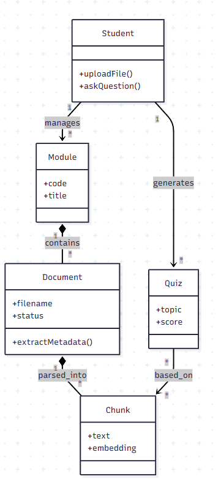
The initial functional requirements include: uploading and storing documents; automatic classification of documents by module and resource type; extraction and storage of assessment information and key dates; semantic search and RAG-style question answering over the document corpus; automatic quiz and flashcard generation; and basic past-paper topic analysis. The system must present this functionality through a web interface.
Non-functional requirements include: maintaining acceptable response times for typical queries on a corpus of several hundred documents; ensuring that answers are explainable by linking back to source documents; and designing the architecture so that components such as the RAG pipeline or quiz engine can be replaced or extended without major rework. A service-oriented architecture with clear boundaries between ingestion, storage, retrieval and presentation is therefore appropriate.
The analysis phase has clarified the problem from a student perspective, identified key stakeholders and captured an initial set of functional and non-functional requirements. These findings point towards a modular architecture with distinct services for ingestion, classification, retrieval and quiz generation. The next chapter translates these requirements into a concrete design and technology stack.
This chapter describes how the requirements identified in Chapter 3 are translated into a concrete system design. It outlines the chosen software development methodology, presents the logical and physical architecture, and explains the main design decisions for each subsystem.
Given the exploratory nature of integrating multiple AI components and the need for iterative feedback, an agile, incremental development approach is appropriate. The project follows a lightweight variant of Scrum, characterized by short, two-week iterations (sprints) focused on delivering vertical slices of functionality.
Figure 32: The Agile Development Lifecycle. Source: https://indevlab.com/blog/what-is-agile-development/
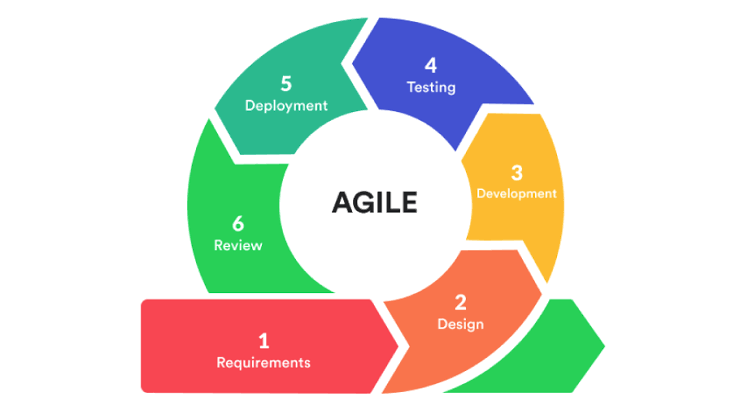
This iterative cycle ensures that the system design can evolve as practical constraints of the AI models (e.g., latency, context window limits) are discovered. The development process is broken down into the following key stages:
The cycle begins with defining requirements as "User Stories" (e.g., "As a student, I want to upload a PDF so that I can search its contents"). These stories are prioritised in a backlog based on value to the student and technical feasibility.
Before code is written, the architecture for the specific feature is modelled. This involves updating the schema (as seen in Section 4.4.1) and selecting appropriate AI models (e.g., choosing between all-MiniLM-L6-v2 or text-embedding-3-small).
Figure 33: The Scrum Process. Source: https://www.researchgate.net/figure/The-Scrum-Software-Development-Cycle_fig1_378534256
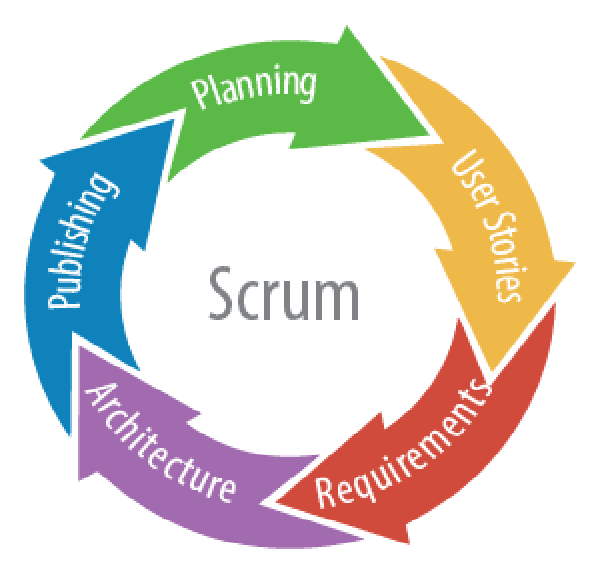
Implementation takes place in short sprints. This involves coding the backend API endpoints (FastAPI) and the corresponding frontend interface. A key focus during this phase is "vertical slicing"—building one complete feature from database to UI rather than building all database tables first.
Each feature undergoes integration testing to ensure the AI components behave deterministically where possible. At the end of the cycle, the feature is reviewed against the original requirements to ensure it solves the student's problem effectively before moving to the next sprint.
StudySpace follows a modular, component-based architecture designed for flexibility and extensibility. The system is composed of distinct, loosely coupled services that communicate via well-defined APIs. This design ensures that individual components—particularly the rapidly evolving AI models—can be swapped or upgraded without refactoring the entire system.
The architecture consists of four primary layers:
To ensure zero-friction access for students, the system is designed as a fully hosted web application. Students access StudySpace via a standard web browser without the need to install or configure local software.
The system follows a standard client-server deployment model. The Dockerized application stack is deployed to a cloud hosting environment (e.g., AWS EC2, Google Cloud Run, or Azure App Service). This approach ensures the application is accessible via browser, allowing students to log in from any device—laptop, tablet, or phone—while maintaining a persistent, server-side "shoebox" of their academic materials. The modular design allows the backend to easily switch between different LLM providers based on user preference or administrator configuration without redeploying the infrastructure.
StudySpace employs a modern three-tier web application architecture, designed to ensure modularity, scalability, and separation of concerns. This structure comprises a Presentation Layer, an Application Layer, and a Data Layer, with a distinct interface for External AI Services. This layered approach allows the user interface to remain lightweight and responsive while heavy processing (document parsing, vector embedding) is handled by the backend, and complex reasoning is offloaded to specialised AI providers.
The high-level architecture illustrates the data flow from the user's browser through to the persistent storage and AI services. The system is accessed via a standard web browser, which communicates with the Presentation Layer. This layer forwards requests to the Application Layer (Backend API), which orchestrates all logic, database interactions, and calls to external LLMs.
Figure 34: High Level Architecture. Source: Mermaid Diagram
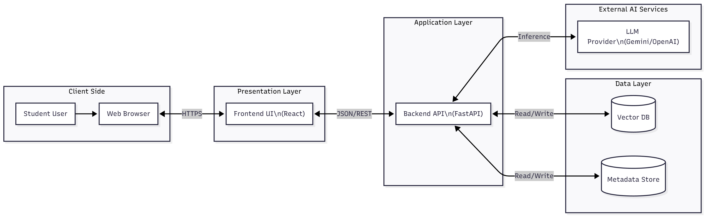
The logical architecture provides a granular view of the components within each layer.
Figure 35: Three-tier Logical Architecture Diagram. Source: Mermaid Diagram
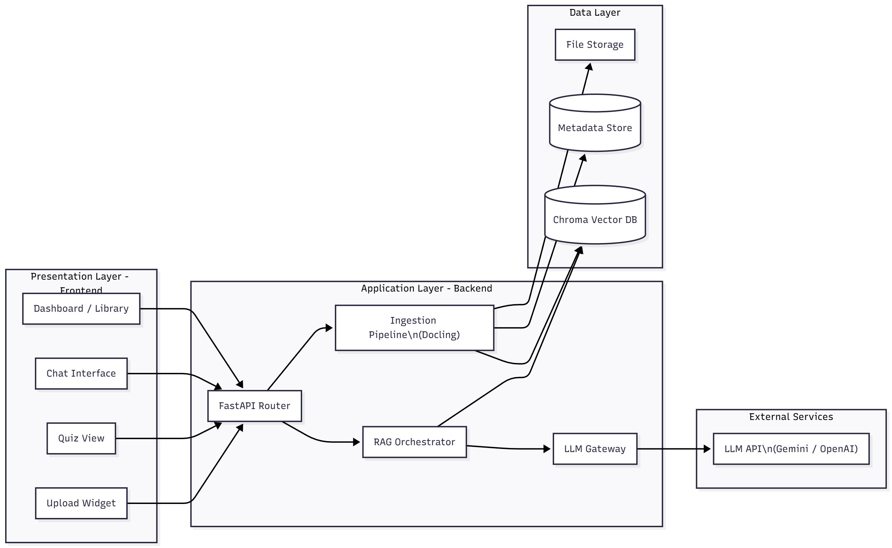
Separation of AI Logic: The LLM Gateway is explicitly designed to decouple the application logic from the specific AI provider. This allows the system to switch between Gemini 2.5 Flash (for speed/cost) and GPT-4o (for complex reasoning) via a simple configuration change, without requiring code refactoring.
Asynchronous Ingestion: The Ingestion Pipeline is designed to run asynchronously. When a user uploads a large PDF, the API immediately acknowledges the upload, while the heavy parsing and embedding tasks run in the background, notifying the user (via the Dashboard) when the document is ready for retrieval.
The data architecture of StudySpace is underpinned by a relational model for structured metadata and a vector store for semantic content. This is visualized through two primary Entity Relationship Diagrams (ERDs): the Content Ingestion Schema and the Study Interaction Schema.
This schema defines how unstructured files are transformed into structured assets. It tracks the lineage from raw upload to processed chunks, ensuring that every piece of information can be traced back to its source.
Figure 36: Content Ingestion ERD. Source: Mermaid Diagram
This diagram depicts how uploaded files are processed, classified, and chunked for retrieval.
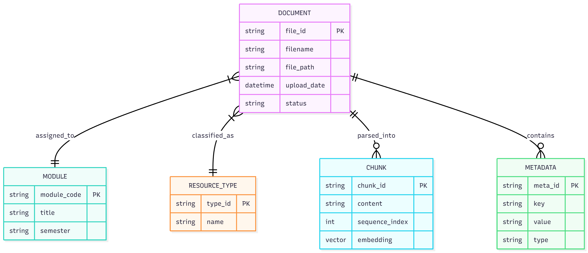
This schema models the student's engagement with the system. It links chat sessions and generated quizzes back to the underlying content chunks, enabling the system to track which materials are being actively studied.
Figure 37: Study Interaction ERD. Source: Mermaid Diagram
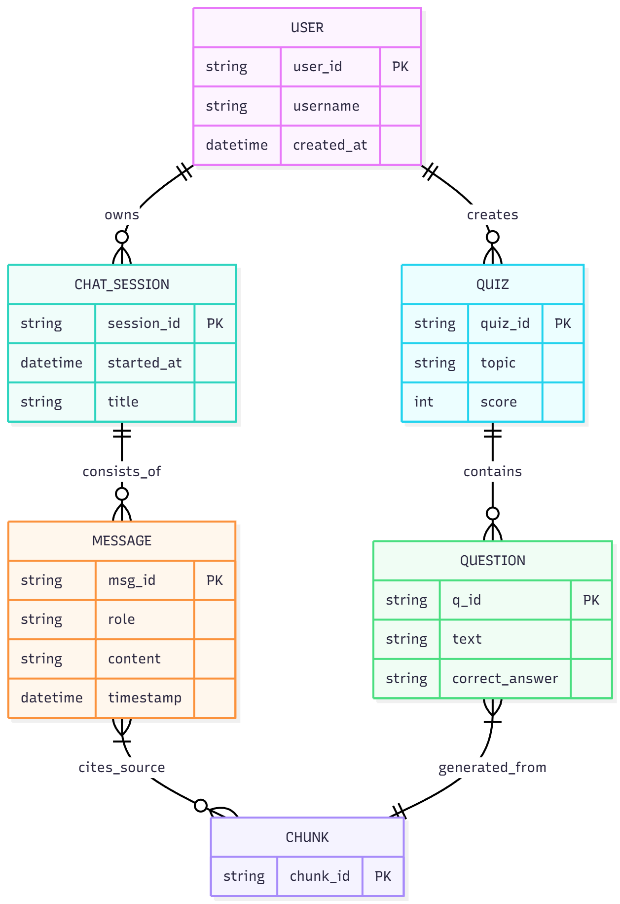
In summary, the system design adopts a modular, service-oriented architecture underpinned by familiar web technologies and specialised AI components for document processing and retrieval. The chosen methodology supports iterative development and evaluation of each subsystem. The next stages of the project focus on implementing and testing these components in line with the testing and evaluation plan.
This chapter outlines the strategy for testing and evaluating StudySpace. Given the mix of conventional web development and AI-driven components, a combination of unit testing, integration testing and empirical evaluation is required.
Unit tests will cover core non-AI logic, such as database operations, metadata extraction utilities and API endpoints. Integration tests will focus on the ingestion pipeline (ensuring that uploaded files are parsed, classified and stored correctly) and the end-to-end RAG flow from query to answer and supporting sources.
For the quiz engine, tests will verify that generated questions and answers are well-formed and traceable back to source documents. Where AI services introduce non-determinism, tests will focus on structural and consistency properties rather than exact wording.
Evaluation will proceed along three dimensions. First, information-retrieval style metrics (precision at k, recall) will be used on a small labelled dataset to assess whether the RAG retriever is returning relevant chunks for typical student queries. Second, extraction accuracy will be measured for fields such as assessment weights and deadlines by comparing automatically extracted values to manually annotated ground truth.
Third, a small user study with TU Dublin students will collect qualitative feedback on usability and perceived usefulness. Participants will be asked to complete typical tasks (e.g. finding lab instructions, generating a quiz for a module) and to rate their experience. This mixed-methods evaluation will help identify strengths and areas for improvement.
A structured combination of automated tests and targeted evaluation metrics will provide confidence that StudySpace behaves correctly and delivers value to students. The testing and evaluation plan will be refined as components are implemented and practical constraints become clearer.
The StudySpace prototype now runs end-to-end on a developer laptop: students can upload documents through the web interface, the ingestion pipeline converts each file to Markdown, embeddings are written to a persistent vector store, and retrieval-augmented chat responses are streamed back with citations. This chapter documents how that vertical slice was implemented, the frameworks that underpin it, and the practical lessons gathered while exercising the system with real teaching material.
The implementation deliberately leans on production-grade open-source components so that later iterations can grow without fundamental rework. FastAPI and Pydantic provide the HTTP interface, MarkItDown handles document conversion, sentence-transformers generate dense embeddings, ChromaDB persists similarity vectors [12], and Gemini 2.5 Flash serves as the generator model [11]. The frontend is a lightweight Jinja2 template with vanilla JavaScript, which keeps the feedback cycle short while still demonstrating the intended interaction design.
The codebase mirrors the logical architecture introduced in Chapter 4: ingestion, retrieval and generation live in isolated modules that can be swapped independently. Figure 6.1 (code excerpts below) highlights the spine of the vertical slice.
Backend service. The FastAPI application wires together dependency instances once at startup and exposes three public endpoints (/upload, /chat, /documents). The upload route streams files to disk, passes the saved path to the processor, and immediately indexes the resulting text, while the chat route delegates to the RAG service and wraps the response in a typed Pydantic model.
doc_processor = DocumentProcessor()
vector_store = VectorStore()
rag_chat = RAGChat(vector_store, GEMINI_API_KEY)
@app.post("/upload")
async def upload_document(file: UploadFile = File(...)):
try:
file_path = UPLOAD_DIR / file.filename
with open(file_path, "wb") as buffer:
shutil.copyfileobj(file.file, buffer)
content = doc_processor.process_document(str(file_path))
doc_id = f"{file.filename}_{len(vector_store.documents)}"
vector_store.add_document(doc_id, content, {"filename": file.filename, "path": str(file_path)})
return {"message": f"Document '{file.filename}' processed successfully", "doc_id": doc_id}
except Exception as e:
raise HTTPException(status_code=500, detail=f"Error processing document: {str(e)}")
@app.post("/chat", response_model=ChatResponse)
async def chat(request: ChatRequest):
try:
response, sources = rag_chat.chat(request.message)
return ChatResponse(response=response, sources=sources)
except Exception as e:
raise HTTPException(status_code=500, detail=f"Error processing chat: {str(e)}")
# ...
Document ingestion. DocumentProcessor wraps Microsofts MarkItDown converter [2] so that PDFs, DOCX, PPTX and plain text files all emerge as Markdown with preserved headings and tables. The helper also retains logging hooks for debugging failed conversions.
class DocumentProcessor:
def __init__(self):
self.markitdown = MarkItDown()
def process_document(self, file_path: str) -> str:
try:
path = Path(file_path)
if not path.exists():
raise FileNotFoundError(f"File not found: {file_path}")
result = self.markitdown.convert(file_path)
if result is None:
raise ValueError(f"Failed to process document: {file_path}")
logger.info(f"Successfully processed document: {file_path}")
return result.text_content
except Exception as e:
logger.error(f"Error processing document {file_path}: {str(e)}")
raise
Vector store. The retrieval layer uses the all-MiniLM-L6-v2 encoder to create 384-dimensional embeddings and persists them in a local Chroma collection. Text is chunked in 1 000-character windows with 200-character overlap, which balances context cohesion with query-time latency.
class VectorStore:
def add_document(self, doc_id: str, content: str, metadata: Dict[str, Any] = None):
chunks = self._chunk_text(content, CHUNK_SIZE, CHUNK_OVERLAP)
embeddings = self.embedding_model.encode(chunks)
ids = [f"{doc_id}_chunk_{i}" for i in range(len(chunks))]
metadatas = []
for i, chunk in enumerate(chunks):
chunk_metadata = metadata.copy() if metadata else {}
chunk_metadata.update({"doc_id": doc_id, "chunk_index": i, "total_chunks": len(chunks)})
metadatas.append(chunk_metadata)
self.collection.add(
embeddings=embeddings.tolist(),
documents=chunks,
metadatas=metadatas,
ids=ids
)
self.documents[doc_id] = {"content": content, "metadata": metadata or {}, "chunks": len(chunks)}
logger.info(f"Added document {doc_id} with {len(chunks)} chunks")
def _chunk_text(self, text: str, chunk_size: int = 1000, overlap: int = 200) -> List[str]:
if len(text) <= chunk_size:
return [text]
# ... paragraph, sentence, and whitespace-aware splitting logic ...
RAG prompt construction. The chat module pulls top-k chunks, builds a grounded prompt, and calls Gemini 2.5 Flash via the official SDK [11].
class RAGChat:
def chat(self, message: str) -> Tuple[str, List[Dict[str, Any]]]:
context, sources = self.vector_store.get_relevant_context(message)
prompt = self._create_prompt(message, context)
response = self.model.generate_content(prompt)
if not response.text:
raise ValueError("Empty response from Gemini")
return response.text, sources
def _create_prompt(self, message: str, context: str) -> str:
if context.strip():
prompt = f"""You are a helpful AI assistant for students studying various academic modules.
You have access to the following relevant information from the student's documents:
{context}
Based on the above context, please answer the following question:
{message}
"""
else:
prompt = f"""You are a helpful AI assistant for students. The user asked: {message}
Since no relevant context was found in the uploaded documents, please provide a general response based on your knowledge."""
return prompt
Frontend experience. A single responsive template renders both the uploader and chat surface. Drag-and-drop uploads hit the /upload endpoint, while chat events stream responses and render the provenance list so that every answer can be traced.
function addMessage(content, type, sources = null) {
const messageDiv = document.createElement('div');
messageDiv.className = `message ${type}`;
let html = `<strong>${type === 'user' ? 'You' : 'AI Assistant'}:</strong> ${content}`;
if (sources && sources.length > 0) {
html += '<div class="sources"><strong>Sources:</strong>';
sources.forEach(source => {
html += `<div class="source-item">📄 ${source.filename} (chunk ${source.chunk_index})</div>`;
});
html += '</div>';
}
messageDiv.innerHTML = html;
chatMessages.appendChild(messageDiv);
chatMessages.scrollTop = chatMessages.scrollHeight;
}
Developer tooling. Two supporting artifacts accelerate regression testing. First, the command-line demo loads a synthetic “Introduction to Machine Learning” document, pushes it through the same ingestion pipeline, and issues three sample queries. Second, a zero-shot classification helper built with facebook/bart-large-mnli proves that module/resource tagging can be layered on without task-specific training; the AES lecture sample is consistently labelled as “Security”, which matches stakeholder expectations.
The delivered prototype validates the riskiest aspects of StudySpace: document ingestion, persistent semantic search, and cited LLM responses, all exposed through a coherent UI. The modular design proved valuable—each layer (document conversion, embeddings, vector persistence, Gemini prompting, frontend rendering) was implemented and tested independently before being stitched together. The immediate priorities for the next sprint are (1) exposing automatic module/resource labels alongside each upload, (2) adding structured metadata extraction for assessments, and (3) hardening the evaluation harness so changes to embeddings or prompts can be assessed quantitatively. With the core workflow in place, subsequent work can concentrate on quiz generation and calendar synchronisation without jeopardising the foundations established here.
Key technical risks include the robustness of document parsing on noisy or scanned materials, the reliability of zero-shot classification for modules with overlapping content, and the cost or rate limits of external AI services used for embeddings and generation. There is also a schedule risk associated with integrating multiple components (parsing, classification, RAG, quiz generation) within the available time.
From a usability perspective, there is a risk that the interface becomes cluttered or that the system behaves in ways that are opaque to users (e.g. surprising quiz questions or answers). Managing these risks will require iterative testing and careful scoping of features.
[1] P. Lewis et al., "Retrieval-Augmented Generation for Knowledge-Intensive NLP Tasks," in Proc. Adv. Neural Inf. Process. Syst., 2020, vol. 33, pp. 9459–9474.
[2] N. Livathinos et al., "Docling Technical Report," arXiv preprint arXiv:2408.09869, 2024.
[3] "Product Documentation," Docling. [Online]. Available: https://www.docling.ai.
[4] B. Pfitzmann et al., "DocLayNet: A Large-Scale Dataset for Document Layout Analysis," in Proc. KDD, 2022, pp. 3743–3751.
[5] S. Adesope, T. Trevisan, and N. Sundararajan, "Retrieval Practice and Transfer of Learning: A Meta-Analysis," Rev. Educ. Res., vol. 87, no. 2, 2017.
[6] "NotebookLM product overview," Google, 2024. [Online]. Available: https://notebooklm.google/.
[7] "NotebookLM now lets you listen to a conversation about your sources," Google The Keyword, Sep. 2024. [Online]. Available: https://blog.google/technology/ai/notebooklm-audio-overviews/.
[8] M. Grootendorst, "BERTopic: Neural topic modeling with a class-based TF-IDF procedure," arXiv preprint arXiv:2203.05794, 2022.
[9] P. He, J. Gao, and W. Chen, "DeBERTaV3: Improving DeBERTa using ELECTRA-Style Pre-Training with Gradient-Disentangled Embedding Sharing," arXiv preprint arXiv:2111.09543, 2021.
[10] M. Lewis et al., "BART: Denoising Sequence-to-Sequence Pre-training for Natural Language Generation, Translation, and Comprehension," in Proc. 58th Annu. Meeting Assoc. Comput. Linguist., 2020, pp. 7871–7880.
[11] Gemini Team, "Gemini 1.5: Unlocking multimodal understanding across millions of tokens of context," arXiv preprint arXiv:2403.05530, 2024.
[12] "Introduction," Chroma. [Online]. Available: https://docs.trychroma.com/docs/overview/introduction.
[13] "Documentation," Qdrant. [Online]. Available: https://qdrant.tech/documentation/.
[14] C. A. Rowland, "The effect of testing versus restudy on retention: a meta-analytic review of the testing effect," Psychol. Bull., vol. 140, no. 6, pp. 1432–1463, 2014.
[15] N. J. Cepeda et al., "Distributed practice in verbal recall tasks: A review and quantitative synthesis," Psychol. Bull., vol. 132, no. 3, pp. 354–380, 2006.
[16] H. L. Roediger III and A. C. Butler, "The critical role of retrieval practice in long-term retention," Trends Cogn. Sci., vol. 15, no. 1, pp. 20–27, 2011.
[17] R. Bodily and K. Verbert, "Review of Research on Student-Facing Learning Analytics Dashboards and Educational Recommender Systems," IEEE Trans. Learn. Technol., vol. 10, no. 4, pp. 405–418, 2017.
[18] "MarkItDown: Python tool for converting files and office documents to Markdown," Microsoft. [Online]. Available: https://github.com/microsoft/markitdown.
[19] "Marker: Convert PDF to Markdown quickly with high accuracy," Datalab-to. [Online]. Available: https://github.com/datalab-to/marker.
[20] "Pandoc: A universal document converter." [Online]. Available: https://pandoc.org/.
[21] W. Yin et al., "Benchmarking Zero-shot Text Classification: Datasets, Evaluation and Entailment Approach," in Proc. EMNLP, 2019.
[22] L. Tunstall et al., "Efficient Few-Shot Learning Without Prompts," arXiv preprint arXiv:2209.11055, 2022.
[23] A. J. Thirunavukarasu et al., "Large language models for medicine: the need for a comprehensive benchmark," J. Am. Med. Inform. Assoc., vol. 31, no. 8, pp. 1787–1801, 2024.
[24] A. Pan et al., "The Testing Effect in Computer Science Education: A Meta-Analysis," ACM Trans. Comput. Educ., vol. 23, no. 1, 2023. FLAG
[25] K. M. O'Day and J. D. Karpicke, "Comparing and combining retrieval practice and concept mapping," J. Educ. Psychol., 2021.
[26] J. Sweller et al., "Cognitive Architecture and Instructional Design: 20 Years Later," Educ. Psychol. Rev., 2019.
[27] L. Chen et al., "Generative AI in Education: A Systematic Review of Opportunities and Challenges," Comput. Educ. Artif. Intell., 2024.
[28] E. Kasneci et al., "ChatGPT for good? On opportunities and challenges of large language models for education," Learn. Individ. Differ., 2023.
[29] D. C. Brooks and M. G. Gierdowski, "2023 Students and Technology Report: Flexibility, Choice, and Equity in the Student Experience," EDUCAUSE, 2023.
[30] J. Noteboom, "The student as user: mapping student experiences of platformisation in higher education," Learn. Media Technol., vol. 50, no. 1, pp. 29–43, 2025, doi:10.1080/17439884.2024.2414055.
[31] Digital Education Council, Global AI Student Survey 2024, Aug. 2024. [Online]. Available: https://26556596.fs1.hubspotusercontent-eu1.net/hubfs/26556596/Digital%20Education%20Council%20Global%20AI%20Student%20Survey%202024.pdf
[32] "Python Text Extraction Benchmarks 2025," Kreuzberg, 2025. [Online]. Available: https://benchmarks.kreuzberg.dev/
[33] "AWS Textract vs Google, Azure, and GPT-4o: Invoice Extraction Benchmark," Businessware Technologies, Jan. 2025. [Online]. Available: https://www.businesswaretech.com/blog/research-best-ai-services-for-automatic-invoice-processing
[34] D2L, "Brightspace Learning Environment Overview," 2024. [Online]. Available: https://www.d2l.com/brightspace/
[35] Notion Labs, Inc., "Notion product guide," 2024. [Online]. Available: https://www.notion.so/help/guides
[36] Microsoft, "OneNote help & learning," 2024. [Online]. Available: https://support.microsoft.com/en-us/onenote
[37] Obsidian Labs, "Obsidian product tour," 2024. [Online]. Available: https://obsidian.md/features
[38] AnkiWeb, "Anki manual," 2025. [Online]. Available: https://docs.ankiweb.net/
[39] Quizlet Inc., "Quizlet digital flashcards and study sets," 2024. [Online]. Available: https://quizlet.com/
[40] Meta, "React: The Library for Web and Native User Interfaces," 2024. [Online]. Available: https://react.dev/
[41] OpenAI, "ChatGPT," 2024. [Online]. Available: https://openai.com/gpt-5
[42] Anthropic, "The Claude 3 Model Family: Opus, Sonnet, Haiku," 2024. [Online]. Available: https://www.anthropic.com/news/claude-3-family
[43] A. Yang et al., "Qwen-7B Technical Report," arXiv preprint arXiv:2309.16609, 2023.
[44] "Pinecone: The Vector Database for AI," 2024. [Online]. Available: https://www.pinecone.io/
[45] J. Johnson, M. Douze, and H. Jégou, "Billion-scale similarity search with GPUs," IEEE Transactions on Big Data, vol. 7, no. 3, pp. 535–547, 2019.
[46] A. Vaswani, N. Shazeer, N. Parmar, J. Uszkoreit, L. Jones, A. N. Gomez, L. Kaiser, and I. Polosukhin, "Attention Is All You Need," arXiv preprint arXiv:1706.03762, 2023.
[47] "Retrieval-Augmented Generation Strategies," Morphik, 2024. [Online]. Available: https://www.morphik.ai/blog/retrieval-augmented-generation-strategies
[48] "Common retrieval-augmented generation (RAG) techniques explained," Microsoft, Feb. 2025. [Online]. Available: https://www.microsoft.com/en-us/microsoft-cloud/blog/2025/02/04/common-retrieval-augmented-generation-rag-techniques-explained/
[49] "Optimizing RAG Performance: Chunking, Indexing, and Evaluation," Galileo, 2024. [Online]. Available: https://galileo.ai/blog/rag-performance-optimization
[50] "Rerankers in RAG: Two‑Stage Retrieval for Better Context," Pinecone, 2024. [Online]. Available: https://www.pinecone.io/learn/series/rag/rerankers/
[51] "Battle-Tested Strategies for High-Impact RAG Systems," Hitreader, 2024. [Online]. Available: https://www.hitreader.com/battle-tested-strategies-high-impact-rag-systems/
Title: Student Study Habits & Technology Survey
Intro: This survey aims to understand how university students manage their academic materials and use technology for studying. Your responses will help design "StudySpace," a new AI-powered study hub.
Section 1: Context & Demographics
Which year are you in?
What is your primary discipline?
Section 2: Document Management 3. Where do you currently store your study materials? (Check all that apply)
How much time do you spend per week purely organising files (finding lectures, renaming PDFs, moving folders)?
"It is easy to find a specific piece of information (e.g. a lab instruction) from 3 weeks ago."
Section 3: Study Habits 6. Do you use flashcards (Anki, Quizlet, Physical)?
Section 4: AI in Study 8. How do you currently use Generative AI (ChatGPT, Gemini, etc.) for university work?
Section 5: Feature Ranking 10. Rank these potential features for a "Study App" from 1 (Most Wanted) to 5 (Least Wanted):